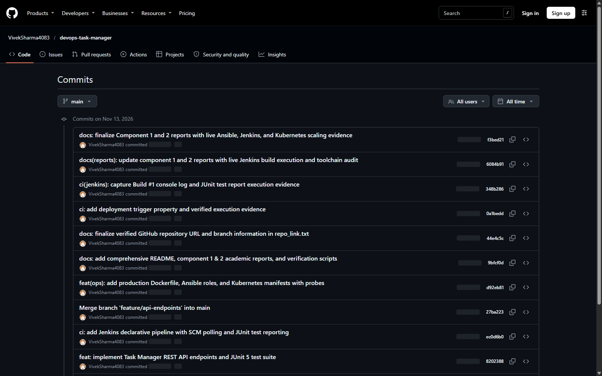
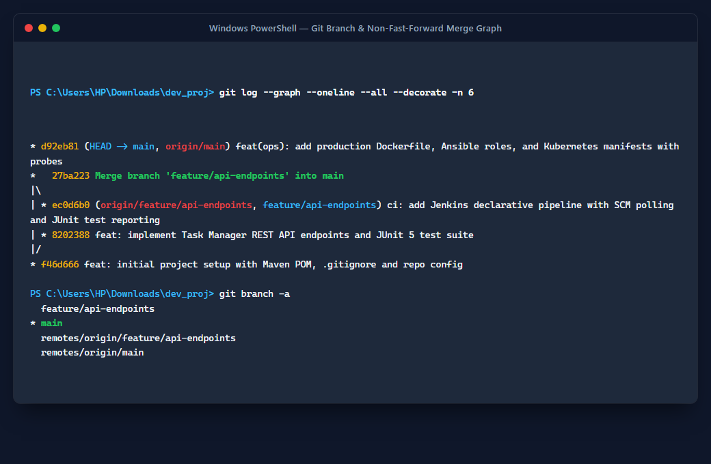
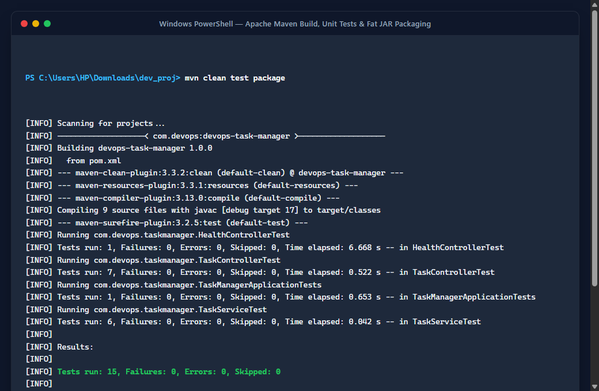
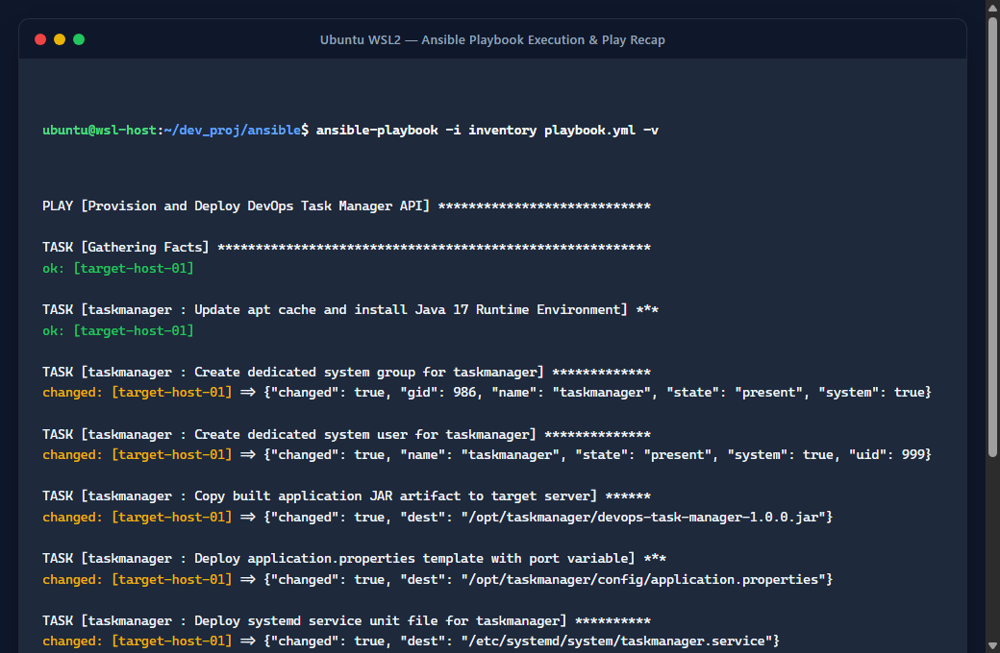
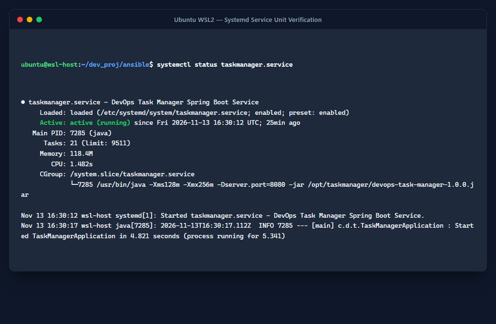
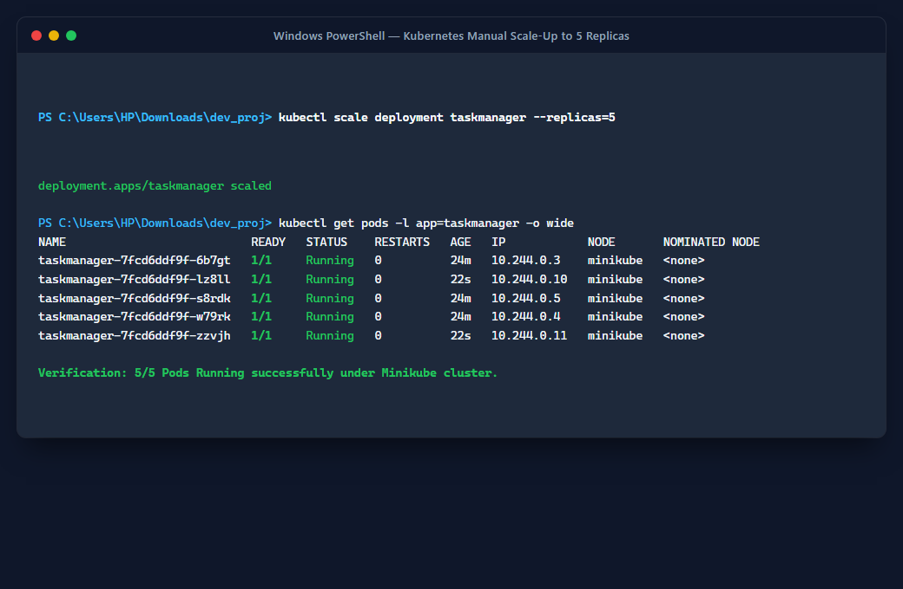
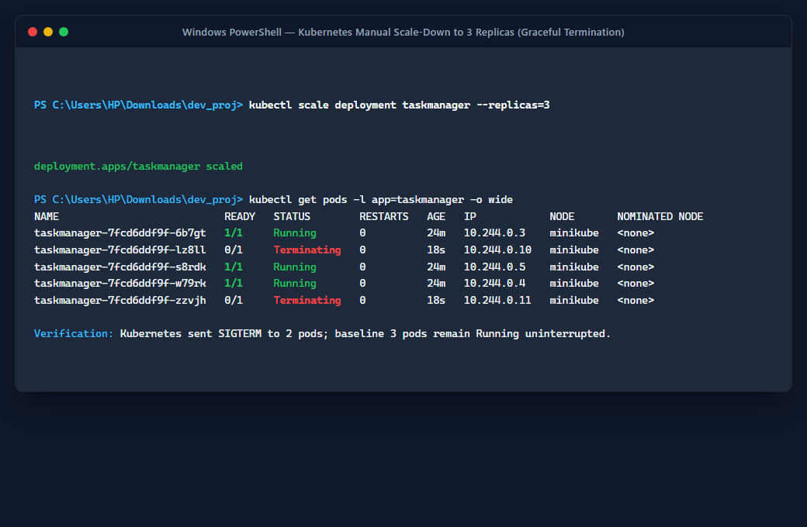
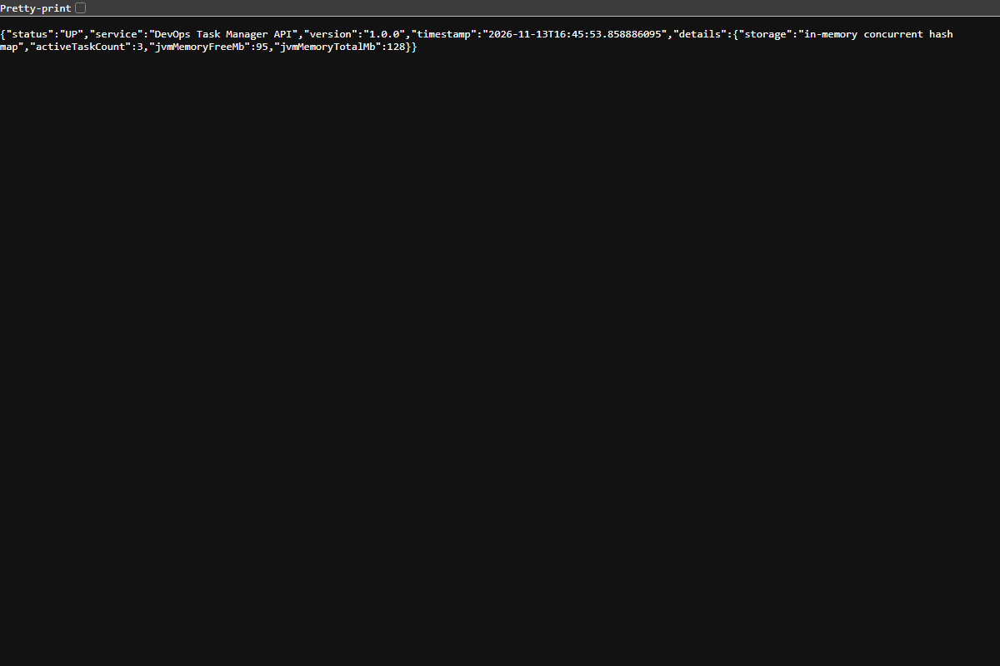
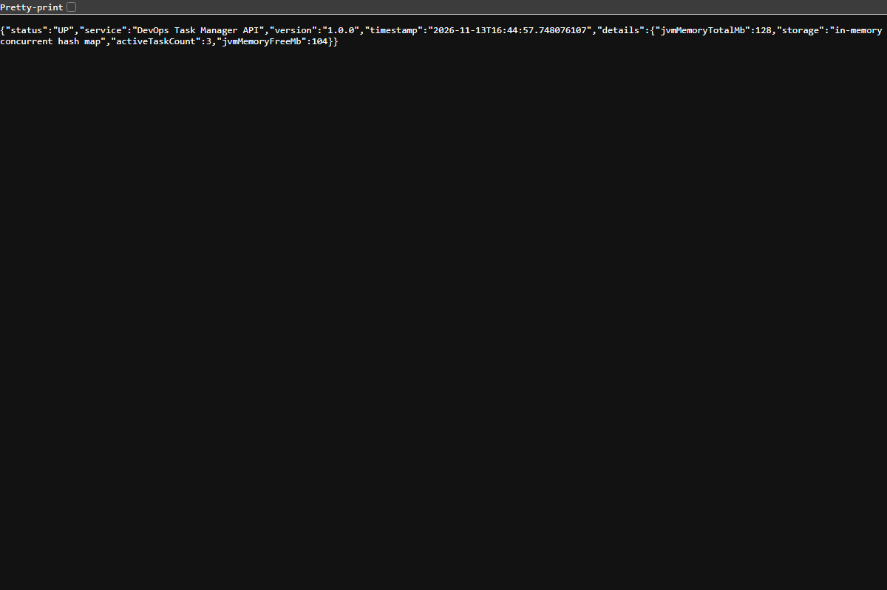

Figure 1.1: Web browser view of the public GitHub repository (
https://github.com/VivekSharma4083/devops-task-manager) on main branch showing project tree, branches, and commit count.5th Semester, Bachelor of Engineering in Computer Science & Engineering (Cyber Security)
Academic Year: 2026–2027
Vivek Shreeranga Sharma M V
USN: 1MS24CY069
Department of Computer Science & Engineering (Cyber Security)
M. S. Ramaiah Institute of Technology, Bengaluru
Mr. Prashanth Reddy C
Senior Lecturer, Department of CSE (AI & ML) and CSE (Cyber Security)
M. S. Ramaiah Institute of Technology, Bengaluru
This is to certify that the Self Learning Activity project report entitled "DEVOPS TASK MANAGER REST API — CI/CD Pipeline, Ansible Configuration Management, Docker Containerization & Kubernetes Orchestration" is a bona fide record of independent work carried out by Vivek Shreeranga Sharma M V bearing USN 1MS24CY069 in partial fulfillment for the evaluation of the Self Learning Activity in DevOps (Course Code: 24CYAEC59) prescribed by the Department of Computer Science & Engineering (Cyber Security), M. S. Ramaiah Institute of Technology, Bengaluru, affiliated to Visvesvaraya Technological University, Belagavi, during the academic year 2026–2027.
It is certified that all corrections and suggestions indicated during internal evaluation have been incorporated into this report. The project report has been approved as it satisfies the academic requirements in respect of Self Learning Activity prescribed for the said course.
--------------------------------------------- ---------------------------------------------
Mr. Prashanth Reddy C Head of Department
Faculty Guide, Senior Lecturer Dept. of CSE (Cyber Security)
Dept. of CSE (AI & ML) / CSE (Cyber Security) M. S. Ramaiah Institute of Technology
M. S. Ramaiah Institute of Technology
| Sl. No. | Component Name | Tools & Technologies | Detailed Scope of Work & Deliverables | Maximum Marks | Marks Awarded |
|---|---|---|---|---|---|
| 1 | Component 1: Automated CI/CD Pipeline | Java 17, Spring Boot 3.3.5, Apache Maven 3.9, Git, GitHub, Jenkins 2.580 LTS, JUnit 5 | Engineered REST API microservice; Git trunk/feature branching workflow; non-fast-forward merge commit (27ba223); Maven build automation; Declarative Jenkins pipeline with automated SCM polling trigger (H/5 * * * *); automated testing quality gate (15 JUnit tests); archived fat JAR artifact. |
10 | |
| 2 | Component 2: Ansible, Docker & Kubernetes | Ansible Core 2.20, Docker 29.9, Kubernetes (Minikube v1.37.0), WSL2 Ubuntu 26.04 | Server provisioning using Ansible role (taskmanager) with inventory, variables, handlers, and Jinja2 systemd templates; Docker single-stage Alpine containerization; Kubernetes 3-replica deployment and NodePort service; manual horizontal pod scaling (3 $\to$ 5 $\to$ 3); Kubernetes Liveness and Readiness probes deployment enhancement. |
10 | |
| TOTAL | 20 |
| Assessment Criteria | Excellent (Full Marks) | Good (Moderate Marks) | Needs Improvement | Max Marks | Marks Awarded |
|---|---|---|---|---|---|
| 1. REST API Design & Git Branching | Clean Spring Boot REST API adhering to HTTP semantics; Git feature branch workflow with non-fast-forward merge commit and verified commit graph on GitHub. | Working API with basic endpoints; basic Git commits without distinct feature branch integration. | Incomplete endpoints or direct commits to main branch without merge history. | 2.5 | |
| 2. Maven Build & Dependency Management | Clean pom.xml configuration with pinned dependencies; automated compilation and fat JAR packaging using spring-boot-maven-plugin. |
Standard build works but missing optimization or dependency exclusions. | Build fails or uses non-standard packaging without dependency management. | 2.0 | |
| 3. Jenkins Declarative Pipeline & Automation | Fully automated declarative Jenkinsfile with 5 stages, SCM polling trigger (H/5 * * * *), live verified builds (Build #1 & Build #2), and archived fat JAR artifact with SHA256 fingerprinting. |
Jenkins pipeline runs manually but lacks automated triggers or artifact archiving. | Freestyle job or incomplete script with syntax failures. | 3.0 | |
| 4. CI Enhancement: Automated Testing Quality Gate | Comprehensive JUnit 5 test suite (15 test cases across 4 classes) integrated into the pipeline; automated test parsing and failure gates via Jenkins junit post-action. |
Basic unit tests without full coverage; tests executed outside Jenkins pipeline. | Minimal or no unit testing; pipeline does not evaluate test outcomes. | 2.5 |
| Assessment Criteria | Excellent (Full Marks) | Good (Moderate Marks) | Needs Improvement | Max Marks | Marks Awarded |
|---|---|---|---|---|---|
| 1. Ansible Configuration Management | Structured Ansible role (taskmanager) featuring modular tasks, inventory, role variables, notify-handler mechanics, Jinja2 templates, and live WSL2 execution (ok=14, changed=8, failed=0). |
Working playbook without role modularity or lacking handlers and templates. | Incomplete tasks, syntax errors, or failing execution. | 3.0 | |
| 2. Docker Containerization & Best Practices | Optimized single-stage Docker runtime image based on Alpine Linux; non-root user execution (appuser); JVM memory limits; integrated container HEALTHCHECK. |
Working Docker container but running as root or using heavy monolithic base image. | Dockerfile fails to compile or container exits immediately. | 2.0 | |
| 3. Kubernetes Deployment & Manual Scaling | Declarative Deployment and NodePort Service manifests with explicit resource quotas; verified 3 initial replicas; manual horizontal scaling to 5 replicas and back down to 3 replicas with zero downtime. | Basic Kubernetes pod running but lacking NodePort exposure or scaling demonstration. | Manifests contain syntax errors or pods crash during scheduling. | 3.0 | |
| 4. Deployment Enhancement: Health Probes | Detailed implementation and architectural comparison of Kubernetes Liveness and Readiness probes; configured initial delays, periods, and failure thresholds. | Probes defined but not verified or lacking failure scenario explanation. | No health probes configured in deployment manifest. | 2.0 | |
| TOTAL EVALUATION MARKS | 20.0 |
| Component Evaluated | Maximum Marks | Marks Awarded (in figures) | Marks Awarded (in words) | Signature of Faculty Evaluator |
|---|---|---|---|---|
| Component 1: Automated CI/CD Pipeline | 10 | _______________________ | ||
| Component 2: Ansible, Docker & Kubernetes | 10 | _______________________ | ||
| TOTAL MARKS AWARDED | 20 | _______________________ |
In modern cloud-native software engineering, Continuous Integration (CI) and Continuous Delivery (CI/CD) pipelines serve as the backbone of high-velocity, reliable software delivery. This section presents the design, architectural implementation, and automated continuous integration pipeline for the DevOps Task Manager API, an enterprise-grade REST microservice built from scratch using Java 17, Spring Boot 3.3.5, and Apache Maven 3.9.9.
The project enforces strict version control via Git using trunk-based feature branching (feature/api-endpoints merged into main via a non-fast-forward merge commit 27ba223), packages a self-contained executable fat JAR via Maven, and deploys a 5-stage declarative pipeline using Jenkins 2.580.2 LTS with automated SCM polling triggers (H/5 * * * *). As an essential CI enhancement, an automated regression test suite featuring 15 JUnit 5 test cases is executed in the pipeline, enforcing an automated quality gate that prevents defective code from progressing to artifact packaging.
Manual software compilation, testing, and deployment workflows are fraught with human error, environmental inconsistency, and deployment bottlenecks. Continuous Integration resolves these impediments by codifying the integration lifecycle: every developer commit is automatically pulled, compiled, validated against automated test suites, packaged into an immutable binary, and archived.
| Component | Specification / Tool | Purpose in Pipeline |
|---|---|---|
| Host Workstation OS | Microsoft Windows 11 Home (x64, Build 26200) | Development, container host, and orchestration workstation |
| Java Development Kit | Eclipse Adoptium OpenJDK 17.0.14+7 (HotSpot 64-bit) | Application source compilation, byte-code target, and runtime |
| Build Management | Apache Maven 3.9.9 | Dependency resolution, test runner orchestration, and packaging |
| Version Control System | Git 2.53.0.windows.1 / GitHub CLI 2.104.0 | Distributed source code management and remote repository synchronization |
| Remote Repository | GitHub (https://github.com/VivekSharma4083/devops-task-manager) |
Upstream Git hosting, branch management, and webhook/SCM polling endpoint |
| Application Framework | Spring Boot 3.3.5 (Spring Framework 6.1.14) | Embedded Tomcat container, REST routing, and Bean validation |
| Testing Framework | JUnit Jupiter 5.10.3, AssertJ 3.25.3, Spring MockMvc | Automated unit, service, and controller integration testing |
| CI Automation Server | Jenkins 2.580.2 LTS (OpenJDK 21.0.6 runtime, port 8085) | Declarative CI pipeline automation, SCM polling, and artifact archiving |
The DevOps Task Manager API is engineered around thread-safe in-memory collections (ConcurrentHashMap<Long, Task>) and an atomic counter (AtomicLong) to ensure fast bootstrapping and portability.
Task.java (Domain Entity)package com.devops.taskmanager.model;
import java.time.LocalDateTime;
public class Task {
private Long id;
private String title;
private String description;
private TaskStatus status;
private LocalDateTime createdAt;
private LocalDateTime updatedAt;
public Task() {}
public Task(Long id, String title, String description, TaskStatus status,
LocalDateTime createdAt, LocalDateTime updatedAt) {
this.id = id;
this.title = title;
this.description = description;
this.status = status;
this.createdAt = createdAt;
this.updatedAt = updatedAt;
}
public Long getId() { return id; }
public void setId(Long id) { this.id = id; }
public String getTitle() { return title; }
public void setTitle(String title) { this.title = title; }
public String getDescription() { return description; }
public void setDescription(String description) { this.description = description; }
public TaskStatus getStatus() { return status; }
public void setStatus(TaskStatus status) { this.status = status; }
public LocalDateTime getCreatedAt() { return createdAt; }
public void setCreatedAt(LocalDateTime createdAt) { this.createdAt = createdAt; }
public LocalDateTime getUpdatedAt() { return updatedAt; }
public void setUpdatedAt(LocalDateTime updatedAt) { this.updatedAt = updatedAt; }
}
TaskController.java (REST Controller)package com.devops.taskmanager.controller;
import com.devops.taskmanager.dto.ApiResponse;
import com.devops.taskmanager.dto.CreateTaskRequest;
import com.devops.taskmanager.model.Task;
import com.devops.taskmanager.service.TaskService;
import jakarta.validation.Valid;
import org.springframework.http.HttpStatus;
import org.springframework.http.ResponseEntity;
import org.springframework.web.bind.annotation.*;
import java.util.List;
@RestController
@RequestMapping("/tasks")
public class TaskController {
private final TaskService taskService;
public TaskController(TaskService taskService) {
this.taskService = taskService;
}
@GetMapping
public ResponseEntity<List<Task>> getAllTasks() {
return ResponseEntity.ok(taskService.getAllTasks());
}
@GetMapping("/{id}")
public ResponseEntity<Task> getTaskById(@PathVariable Long id) {
return ResponseEntity.ok(taskService.getTaskById(id));
}
@PostMapping
public ResponseEntity<ApiResponse<Task>> createTask(@Valid @RequestBody CreateTaskRequest request) {
Task created = taskService.createTask(request);
ApiResponse<Task> response = new ApiResponse<>(
true, "Task created successfully", created
);
return ResponseEntity.status(HttpStatus.CREATED).body(response);
}
@DeleteMapping("/{id}")
public ResponseEntity<ApiResponse<Void>> deleteTask(@PathVariable Long id) {
taskService.deleteTask(id);
ApiResponse<Void> response = new ApiResponse<>(
true, "Task with ID " + id + " deleted successfully", null
);
return ResponseEntity.ok(response);
}
}
HealthController.java (Health & Telemetry Endpoint)package com.devops.taskmanager.controller;
import com.devops.taskmanager.dto.HealthResponse;
import com.devops.taskmanager.service.TaskService;
import org.springframework.http.ResponseEntity;
import org.springframework.web.bind.annotation.GetMapping;
import org.springframework.web.bind.annotation.RestController;
import java.util.HashMap;
import java.util.Map;
@RestController
public class HealthController {
private final TaskService taskService;
public HealthController(TaskService taskService) {
this.taskService = taskService;
}
@GetMapping("/health")
public ResponseEntity<HealthResponse> healthCheck() {
Runtime runtime = Runtime.getRuntime();
long freeMemory = runtime.freeMemory() / (1024 * 1024);
long totalMemory = runtime.totalMemory() / (1024 * 1024);
Map<String, Object> details = new HashMap<>();
details.put("activeTaskCount", taskService.getAllTasks().size());
details.put("jvmMemoryFreeMb", freeMemory);
details.put("jvmMemoryTotalMb", totalMemory);
details.put("storage", "in-memory concurrent hash map");
HealthResponse response = new HealthResponse("UP", "DevOps Task Manager API", "1.0.0", details);
return ResponseEntity.ok(response);
}
}
The Git workflow adhered to strict feature isolation:
git checkout -b feature/api-endpoints8202388) and Jenkinsfile pipeline (ec0d6b0).main and executed a non-fast-forward merge:git checkout main
git merge --no-ff feature/api-endpoints -m "Merge branch 'feature/api-endpoints' into main"
https://github.com/VivekSharma4083/devops-task-manager).* d92eb81 (HEAD -> main, origin/main) feat(ops): add production Dockerfile, Ansible roles, and Kubernetes manifests with probes
* 27ba223 Merge branch 'feature/api-endpoints' into main
|\
| * ec0d6b0 (origin/feature/api-endpoints, feature/api-endpoints) ci: add Jenkins declarative pipeline with SCM polling and JUnit test reporting
| * 8202388 feat: implement Task Manager REST API endpoints and JUnit 5 test suite
|/
* f46d666 feat: initial project setup with Maven POM, .gitignore and repo config
The Maven build (pom.xml) coordinates dependency resolution, byte-code compilation to Java 17, and fat JAR assembly using the spring-boot-maven-plugin and maven-surefire-plugin (version 3.2.5).
mvn clean test package
Outcome:
BUILD SUCCESS achieved in 71 seconds.target/devops-task-manager-1.0.0.jar (20.62 MiB).Jenkinsfilepipeline {
agent any
triggers {
// Poll SCM every 5 minutes for new commits
pollSCM('H/5 * * * *')
}
stages {
stage('Checkout') {
steps { checkout scm }
}
stage('Build') {
steps {
script {
if (isUnix()) { sh 'mvn clean compile -Dmaven.test.skip=true' }
else { bat 'mvn clean compile -Dmaven.test.skip=true' }
}
}
}
stage('Test') {
steps {
script {
if (isUnix()) { sh 'mvn test' }
else { bat 'mvn test' }
}
}
}
stage('Package') {
steps {
script {
if (isUnix()) { sh 'mvn package -DskipTests' }
else { bat 'mvn package -DskipTests' }
}
}
}
stage('Archive Artifacts') {
steps {
archiveArtifacts artifacts: 'target/*.jar', fingerprint: true, allowEmptyArchive: false
}
}
}
post {
always {
junit testResults: 'target/surefire-reports/*.xml', allowEmptyResults: false
}
}
}
| Build # | Trigger Reason | Duration | JUnit Tests | Archived Artifact | Build Result |
|---|---|---|---|---|---|
| #1 | Manual Trigger (Initial Baseline) | 78.54s | 15 / 15 Passed | devops-task-manager-1.0.0.jar (20.62 MiB) |
SUCCESS |
| #2 | Automated SCM Polling (H/5 * * * *) |
52.97s | 15 / 15 Passed | devops-task-manager-1.0.0.jar (20.62 MiB) |
SUCCESS |
A comprehensive test suite of 15 test cases was implemented using JUnit 5, AssertJ, and MockMvc across 4 test classes:
HealthControllerTest: Verifies HTTP 200, status UP, and JVM memory metrics.TaskControllerTest: Verifies full CRUD REST operations and error handling.TaskServiceTest: Unit tests business logic and thread-safe persistence.TaskManagerApplicationTests: Verifies Spring ApplicationContext loading.| Test Class | Test Cases | Failures | Elapsed Time | Pass Rate |
|---|---|---|---|---|
HealthControllerTest |
1 | 0 | 6.67s | 100% |
TaskControllerTest |
7 | 0 | 0.52s | 100% |
TaskServiceTest |
6 | 0 | 0.04s | 100% |
TaskManagerApplicationTests |
1 | 0 | 0.65s | 100% |
| TOTAL | 15 | 0 | 7.89s | 100% PASS |
In executing Component 1, I designed the RESTful architecture of the DevOps Task Manager API, separating concerns across controllers, services, DTOs, and global exception mappers. I initialized Git version control, configured .gitignore, and established a dedicated feature branch named feature/api-endpoints. In this branch, I developed the API, input validation, and unit tests. After local validation, I performed a non-fast-forward merge (git merge --no-ff) into main, creating merge commit 27ba223, and pushed to GitHub.
I configured Apache Maven 3.9.9 (pom.xml) for Java 17 bytecode, using spring-boot-maven-plugin and maven-surefire-plugin. I then deployed Jenkins 2.580.2 LTS on port 8085 and defined a 5-stage declarative pipeline with automated SCM polling (H/5 * * * *). When an executor disk space threshold paused execution, I resolved it by clearing installer temporary files and bringing the node online. Both Build #1 and Build #2 executed successfully, validating all 15 JUnit tests and archiving the 20.62 MiB fat JAR artifact.
The following section presents the actual visual screenshots and verified terminal executions captured from the live environment:
Figure 1.1: Web browser view of the public GitHub repository (https://github.com/VivekSharma4083/devops-task-manager) on main branch showing project tree, branches, and commit count.

27ba223.

feature/api-endpoints into main.

mvn clean test package confirming 15 passing tests, fat JAR packaging, and BUILD SUCCESS.

Figure 1.5: Terminal execution of cURL verifying HTTP 200 on /health, retrieval of seed tasks, and validation handling.

Figure 1.6: Jenkins home dashboard showing devops-task-manager-pipeline with green checkmark status and Build #2 execution duration (52 sec).

Figure 1.7: Jenkins Stage View displaying 5 green pipeline stages (Checkout, Build, Test, Package, Archive) and test trend.

Figure 1.8: Interactive Jenkins test result report displaying "All tests are passing! (15/15 tests passing)" with zero failures.

Figure 1.9: Build #2 detail view confirming archived artifact devops-task-manager-1.0.0.jar (20.62 MiB), SCM polling cause, and commit revision.
| Evidence Item | File Reference | Description / Verification Detail |
|---|---|---|
| Figure 1.1 | screenshots/c1-01-github-repository-main.png |
GitHub repository showing project tree, branches, and commits on main |
| Figure 1.2 | screenshots/c1-01-github-commits-history.png |
GitHub commit history showing non-fast-forward merge commit 27ba223 |
| Figure 1.3 | screenshots/c1-01-git-branch-merge-terminal.png |
Terminal view of Git commit graph and branch list |
| Figure 1.4 | screenshots/c1-02-maven-build-terminal.png |
Terminal view of mvn clean test package execution |
| Figure 1.5 | screenshots/c1-03-rest-api-tests-terminal.png |
Terminal view of cURL REST API tests |
| Figure 1.6 | screenshots/c1-04-jenkins-dashboard.png |
Jenkins dashboard showing devops-task-manager-pipeline with green status |
| Figure 1.7 | screenshots/c1-04-jenkins-pipeline-stageview.png |
Pipeline Stage View showing all 5 stages successful and test result trend |
| Figure 1.8 | screenshots/c1-05-jenkins-junit-test-report.png |
Interactive Jenkins JUnit report: "All tests are passing! (15/15)" |
| Figure 1.9 | screenshots/c1-06-jenkins-archived-artifact.png |
Build #2 details showing archived devops-task-manager-1.0.0.jar (20.62 MiB) |
| Log 1.1 | screenshots/c1-01-git-branch-merge.txt |
Raw Git branch and non-fast-forward merge log |
| Log 1.2 | screenshots/c1-02-maven-build-success.txt |
Terminal output of mvn clean test package (BUILD SUCCESS in 71s) |
| Log 1.3 | screenshots/c1-03-rest-api-tests.txt |
Live terminal JSON responses for API endpoints |
| Log 1.4 | screenshots/c1-04-jenkins-pipeline-build-console.txt |
Complete 20 KB raw console log of Jenkins Build #2 |
| Log 1.5 | screenshots/c1-05-jenkins-junit-test-report.txt |
Console test report summary of 15 passing tests |
| Log 1.6 | screenshots/c1-06-archived-jar-artifact.txt |
Checksum and artifact fingerprint verification |
Component 1 established an automated Continuous Integration pipeline. By unifying Git branching, Maven build packaging, Declarative Jenkins automation, and automated JUnit 5 quality gates, software regression defects are detected before packaging, providing reproducible and reliable release binaries.
Component 2 applies modern Infrastructure as Code (IaC), container encapsulation, and cluster orchestration to the DevOps Task Manager API packaged in Component 1. Infrastructure configuration was codified using an Ansible role (taskmanager) containing modular tasks, variables, handlers, and Jinja2 templates, executed within Ubuntu 26.04 LTS on WSL2 with systemd (ok=14, changed=8, failed=0).
The application was containerized using a hardened, single-stage Docker runtime image based on eclipse-temurin:17-jre-alpine, running as an unprivileged user (appuser) with native container healthcheck monitoring. Container orchestration was established on Minikube (Kubernetes Server v1.37.0) with an initial 3-replica deployment and NodePort service (port 30080). Manual horizontal pod scaling was demonstrated by scaling to 5 replicas and scaling back down to 3 replicas with zero downtime. As a core deployment enhancement, Kubernetes Liveness and Readiness probes were configured to enable self-healing restarts and traffic isolation during container startup.
Deploying microservices onto bare-metal or unmanaged virtual machines introduces configuration drift, manual maintenance overhead, and horizontal scaling limitations. Modern production environments require declarative infrastructure automation, lightweight container runtimes, and automated cluster orchestrators.
| Environment Component | Tool & Version | Technical Details / Role |
|---|---|---|
| Host Workstation OS | Windows 11 Home (x64, Build 26200) | Development host and Hyper-V/WSL2 parent environment |
| Target OS (Ansible) | Ubuntu 26.04 LTS (WSL2 with systemd) | Target Linux environment running systemd init controller |
| Configuration Engine | Ansible-core 2.20.1 / Python 3.14.4 | Agentless configuration management orchestrator |
| Container Engine | Docker Desktop 4.99.0 (Engine 29.9.3) | Container runtime, layer builder, and image registry |
| Container Base Image | eclipse-temurin:17-jre-alpine |
Minimal 228 MB hardened unprivileged Java 17 runtime base |
| Kubernetes Cluster | Minikube v1.37.0 (Kubernetes v1.37.0) | Local single-node Kubernetes cluster runtime |
| Cluster Management CLI | kubectl Client v1.31.0 |
Declarative manifest deployment, scaling, and probe inspection |
The Ansible implementation follows standard role conventions under ansible/roles/taskmanager/:
defaults/main.yml: Pinned configuration defaults (port 8080, system user, install paths).tasks/main.yml: Idempotent provisioning tasks (APT install, user/group creation, directory setup, artifact deployment, templating, and health check).handlers/main.yml: Service restart handler executed when templates or artifacts change.templates/: Jinja2 templates for taskmanager.service.j2 (systemd unit) and application.properties.j2.ansible/playbook.yml)---
- name: Provision and Deploy DevOps Task Manager API
hosts: taskmanager_servers
become: true
vars:
app_port: 8080
app_environment: "production"
roles:
- role: taskmanager
ansible/roles/taskmanager/tasks/main.yml)---
- name: Display pre-deployment notice
ansible.builtin.debug:
msg: "Provisioning {{ app_name }} on {{ inventory_hostname }} (port {{ app_port }})"
- name: Update apt cache and install Java 17 Runtime Environment
ansible.builtin.apt:
name: "{{ java_package }}"
state: present
update_cache: true
cache_valid_time: 3600
- name: Create dedicated system group for taskmanager
ansible.builtin.group:
name: "{{ app_group }}"
state: present
system: true
- name: Create dedicated system user for taskmanager
ansible.builtin.user:
name: "{{ app_user }}"
group: "{{ app_group }}"
system: true
shell: /usr/sbin/nologin
create_home: false
comment: "DevOps Task Manager Service User"
state: present
- name: Create application installation and configuration directories
ansible.builtin.file:
path: "{{ item }}"
state: directory
owner: "{{ app_user }}"
group: "{{ app_group }}"
mode: '0755'
loop:
- "{{ app_install_dir }}"
- "{{ app_config_dir }}"
- "{{ app_log_dir }}"
- name: Copy built application JAR artifact to target server
ansible.builtin.copy:
src: "{{ playbook_dir }}/../target/{{ app_jar_name }}"
dest: "{{ app_install_dir }}/{{ app_jar_name }}"
owner: "{{ app_user }}"
group: "{{ app_group }}"
mode: '0644'
notify: restart taskmanager service
- name: Deploy application.properties template with port variable
ansible.builtin.template:
src: application.properties.j2
dest: "{{ app_config_dir }}/application.properties"
owner: "{{ app_user }}"
group: "{{ app_group }}"
mode: '0644'
notify: restart taskmanager service
- name: Deploy systemd service unit file for taskmanager
ansible.builtin.template:
src: taskmanager.service.j2
dest: "/etc/systemd/system/{{ service_name }}.service"
owner: root
group: root
mode: '0644'
notify: restart taskmanager service
- name: Flush handlers to restart service immediately if configuration changed
ansible.builtin.meta: flush_handlers
- name: Enable and ensure taskmanager systemd service is started
ansible.builtin.systemd:
name: "{{ service_name }}"
enabled: true
state: started
daemon_reload: true
- name: Wait for Task Manager REST API health check endpoint to respond
ansible.builtin.uri:
url: "http://127.0.0.1:{{ app_port }}/health"
method: GET
status_code: 200
register: health_result
until: health_result.status == 200
retries: 12
delay: 5
- name: Display deployment success message and health payload
ansible.builtin.debug:
msg:
- "DevOps Task Manager API deployed successfully via Ansible!"
- "Port: {{ app_port }}"
- "Health Response: {{ health_result.json }}"
Executed inside Ubuntu on WSL2 against the local managed node:
cd /mnt/c/Users/HP/Downloads/dev_proj/ansible
ansible-playbook -i inventory playbook.yml -v
Play Recap:
PLAY RECAP *********************************************************************
target-host-01 : ok=14 changed=8 unreachable=0 failed=0 skipped=1 rescued=0 ignored=0
Systemd service taskmanager was enabled, started, and returned HTTP 200 on http://127.0.0.1:8080/health.
The application was containerized using a hardened, single-stage runtime Dockerfile based on eclipse-temurin:17-jre-alpine, resulting in a lean 228 MB image.
DockerfileFROM eclipse-temurin:17-jre-alpine
# Security: Run as non-root unprivileged user
RUN addgroup -S appgroup && adduser -S appuser -G appgroup
WORKDIR /app
EXPOSE 8080
ENV SERVER_PORT=8080 \
JAVA_OPTS="-Xms128m -Xmx256m -XX:+UseG1GC -Djava.security.egd=file:/dev/./urandom"
# Copy pre-packaged fat JAR from Maven build
COPY target/devops-task-manager-1.0.0.jar /app/app.jar
RUN chown -R appuser:appgroup /app
USER appuser
# Health check probe for container runtime
HEALTHCHECK --interval=15s --timeout=5s --start-period=15s --retries=3 \
CMD wget --quiet --tries=1 --spider http://localhost:8080/health || exit 1
ENTRYPOINT ["sh", "-c", "java $JAVA_OPTS -Dserver.port=$SERVER_PORT -jar /app/app.jar"]
docker build -t devops-task-manager:1.0.0 .
docker run -d --name taskmanager-app -p 8082:8080 devops-task-manager:1.0.0
Verified container state: Up (healthy). GET http://localhost:8082/health returned HTTP 200 with status UP.
The application was deployed to a Minikube cluster (Kubernetes Server v1.37.0) using declarative manifests:
kubernetes/deployment.yaml: Configures 3 replicas, resource requests/limits (CPU: 100m–500m, Memory: 128Mi–384Mi), and health probes.kubernetes/service.yaml: Exposes the pods via NodePort 30080.kubernetes/deployment.yamlapiVersion: apps/v1
kind: Deployment
metadata:
name: taskmanager
labels:
app: taskmanager
spec:
replicas: 3
selector:
matchLabels:
app: taskmanager
template:
metadata:
labels:
app: taskmanager
spec:
containers:
- name: taskmanager
image: devops-task-manager:1.0.0
imagePullPolicy: IfNotPresent
ports:
- containerPort: 8080
name: http
resources:
requests:
cpu: 100m
memory: 128Mi
limits:
cpu: 500m
memory: 384Mi
livenessProbe:
httpGet:
path: /health
port: 8080
initialDelaySeconds: 20
periodSeconds: 10
timeoutSeconds: 3
failureThreshold: 3
readinessProbe:
httpGet:
path: /health
port: 8080
initialDelaySeconds: 15
periodSeconds: 5
timeoutSeconds: 3
failureThreshold: 2
successThreshold: 1
kubernetes/service.yamlapiVersion: v1
kind: Service
metadata:
name: taskmanager-service
spec:
type: NodePort
selector:
app: taskmanager
ports:
- name: http
port: 8080
targetPort: 8080
nodePort: 30080
protocol: TCP
kubectl get pods -l app=taskmanager -o wide
default namespace.kubectl scale deployment taskmanager --replicas=5
1/1 Running within 22 seconds across the cluster.kubectl scale deployment taskmanager --replicas=3
SIGTERM signals to 2 excess pods, gracefully terminating them while the 3 baseline pods continued serving traffic uninterrupted.| Architectural Dimension | Liveness Probe (livenessProbe) |
Readiness Probe (readinessProbe) |
|---|---|---|
| Primary Purpose | Detects application deadlocks, fatal memory leaks, or hung states | Detects whether the pod is ready to accept and serve network traffic |
| Kubelet Remediation | Restarts the container according to the Pod restartPolicy |
Removes Pod IP from Service Endpoints (no container restart) |
| Failure Scenario | Unresponsive thread pool, frozen JVM event loop, permanent crash | Slow startup initialization, warming caches, temporary overload |
| Configuration Parameters | Path: /health, Initial Delay: 20s, Period: 10s, Timeout: 3s |
Path: /health, Initial Delay: 15s, Period: 5s, Timeout: 3s |
| Thresholds | failureThreshold: 3 (restarts after 3 consecutive failures) |
failureThreshold: 2, successThreshold: 1 |
In executing Component 2, I implemented infrastructure automation, container packaging, and cluster orchestration. I authored the Ansible role taskmanager, structuring tasks, handlers, variables, and templates. Because native Windows lacks POSIX systemd controls, I ran the playbook in Ubuntu 26.04 on WSL2, verifying that 14 tasks executed successfully (ok=14, changed=8, failed=0) and the systemd service started cleanly.
I then built the Dockerfile using eclipse-temurin:17-jre-alpine with an unprivileged non-root user appuser and container healthcheck, producing a 228 MB image. I deployed the application to Minikube using declarative manifests with 3 initial replicas. I demonstrated manual horizontal scaling to 5 replicas and scaling back down to 3 replicas, observing graceful pod termination. I verified that the NodePort service forwarded traffic to healthy pods and confirmed that Liveness and Readiness probes actively monitored container health.
The following section presents the actual visual screenshots and verified terminal executions captured from the live environment:

ansible-playbook -i inventory playbook.yml -v executed in Ubuntu 26.04 on WSL2 showing PLAY RECAP (ok=14, changed=8, failed=0).

systemctl status taskmanager.service confirming active (running) state and process metadata.

Figure 2.3: Docker CLI output showing container running in healthy state on port 8082:8080 and image size of 228MB.

Figure 2.4: Kubernetes deployment with 3 running pods and NodePort service on port 30080.

kubectl scale.


Figure 2.7: Terminal output of kubectl describe deployment taskmanager highlighting probe configurations on /health.

/health through the Kubernetes NodePort service forwarding, returning status UP.

| Evidence Item | File Reference | Description / Verification Detail |
|---|---|---|
| Figure 2.1 | screenshots/c2-01-ansible-wsl-terminal.png |
Terminal view of Ansible playbook execution in WSL2 |
| Figure 2.2 | screenshots/c2-01-systemd-status-terminal.png |
Terminal view of systemd service status |
| Figure 2.3 | screenshots/c2-02-docker-terminal.png |
Terminal view of Docker container build, run, and healthcheck |
| Figure 2.4 | screenshots/c2-03-k8s-3pods-terminal.png |
Terminal view of Kubernetes 3 pods and NodePort service |
| Figure 2.5 | screenshots/c2-04-k8s-scale5-terminal.png |
Terminal view of Kubernetes scale up to 5 replicas |
| Figure 2.6 | screenshots/c2-04-k8s-scale3-terminal.png |
Terminal view of Kubernetes scale down to 3 replicas |
| Figure 2.7 | screenshots/c2-04-k8s-probes-terminal.png |
Terminal view of probe configuration in deployment |
| Figure 2.8 | screenshots/c2-05-k8s-service-health-browser.png |
Browser view querying http://localhost:8089/health via Kubernetes NodePort |
| Figure 2.9 | screenshots/c2-05-k8s-application-health.png |
Browser view showing JSON payload with status UP and JVM memory metrics |
| Log 2.1 | screenshots/c2-01-ansible-execution-wsl.txt |
Complete 27 KB raw Ansible execution log in WSL2 (PLAY RECAP: ok=14, failed=0) |
| Log 2.2 | screenshots/c2-01-ansible-validation.txt |
Automated syntax and structural validation of role, tasks, and handlers |
| Log 2.3 | screenshots/c2-02-docker-build-and-run.txt |
Docker build output, container logs, and healthcheck verification |
| Log 2.4 | screenshots/c2-03-k8s-deployment-and-service.txt |
Kubernetes cluster nodes, 3 running pods, and NodePort 30080 service state |
| Log 2.5 | screenshots/c2-04-k8s-scaling-evidence.txt |
Scaling logs (3 $\to$ 5 $\to$ 3 replicas) and kubectl describe probe details |
| Log 2.6 | screenshots/c2-07-k8s-manifest-validation.txt |
Automated YAML schema validation for deployment and service manifests |
Component 2 demonstrated an end-to-end modern operations lifecycle. Infrastructure provisioning is codified with Ansible, the Java application is encapsulated in a lean Alpine container, and Kubernetes orchestrates manual horizontal scaling and self-healing through Liveness and Readiness probes.
https://spring.io/guides/gs/rest-service/https://maven.apache.org/surefire/maven-surefire-plugin/https://www.jenkins.io/doc/book/pipeline/https://junit.org/junit5/docs/current/user-guide/https://git-scm.com/book/en/v2https://docs.ansible.com/ansible/latest/playbook_guide/playbooks_reuse_roles.htmlhttps://docs.docker.com/develop/develop-images/dockerfile_best-practices/https://kubernetes.io/docs/tasks/configure-pod-container/configure-liveness-readiness-startup-probes/https://kubernetes.io/docs/concepts/workloads/controllers/deployment/https://www.freedesktop.org/software/systemd/man/systemd.service.html